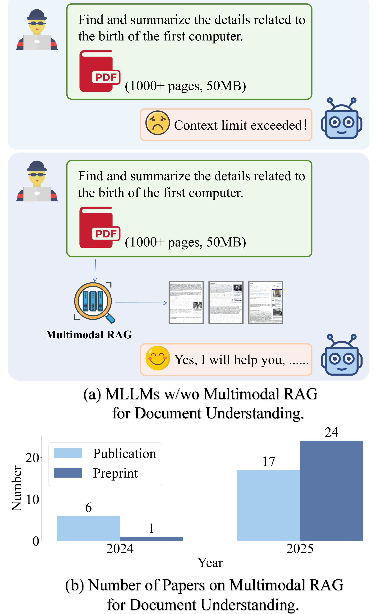
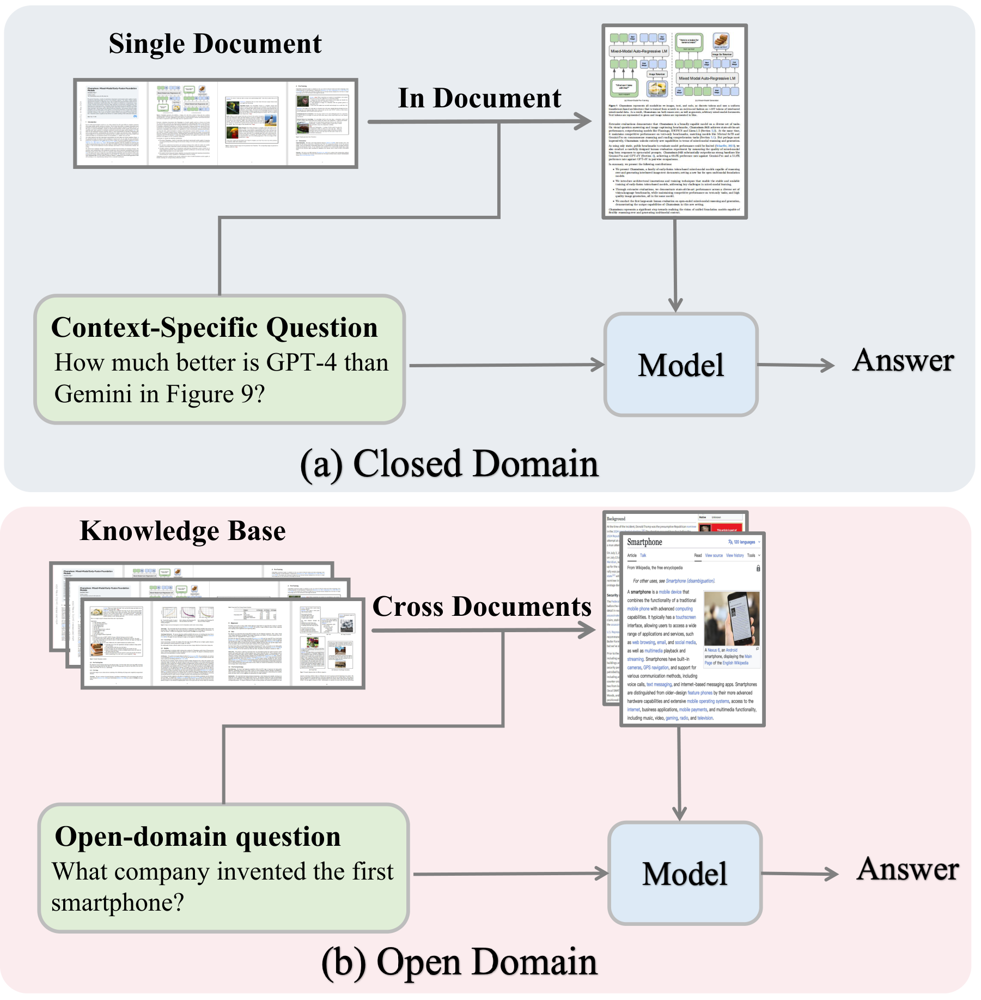
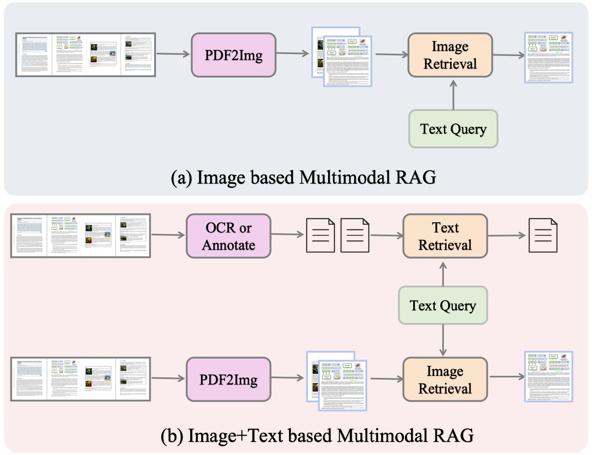
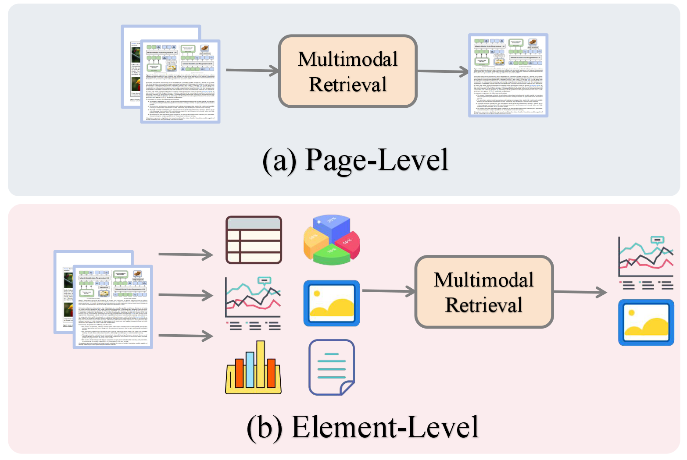
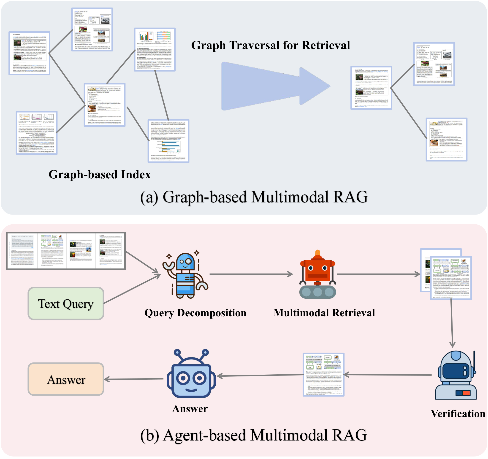

(a) MLLMs with and without Multimodal RAG for large document comprehension. (b) Growth in related publications from 2024 to 2025.
Document understanding is critical for applications from financial analysis to scientific discovery. Current approaches, whether OCR-based pipelines feeding Large Language Models (LLMs) or native Multimodal LLMs (MLLMs), face key limitations: the former loses structural detail, while the latter struggles with context modeling. Retrieval-Augmented Generation (RAG) helps ground models in external data, but documents' multimodal nature — combining text, tables, charts, and layout — demands a more advanced paradigm: Multimodal RAG. This approach enables holistic retrieval and reasoning across all modalities, unlocking comprehensive document intelligence. Recognizing its importance, this paper presents a systematic survey of Multimodal RAG for document understanding. We propose a taxonomy based on domain, retrieval modality, and granularity, and review advances involving graph structures and agentic frameworks. We also summarize key datasets, benchmarks, applications and industry deployment, and highlight open challenges in efficiency, fine-grained representation, and robustness, providing a roadmap for future progress in document AI.
We present the first survey that explicitly bridges multimodal RAG and document understanding, proposing a taxonomy based on domain (open/closed), retrieval modality (image/text/hybrid), retrieval granularity (page/element-level), and hybrid enhancements (graph-based and agent-based).
We compile a broad collection of multimodal RAG datasets, benchmarks, and comparative results for systematic evaluation, covering evaluation metrics for both retrieval-oriented and generation-oriented assessments.
We survey practical applications spanning finance, scientific literature, social analysis, and more, alongside industrial deployment considerations and real-world usage patterns.
We highlight open challenges in efficiency, fine-grained multimodal representation, and robustness, providing a roadmap for future progress in document AI.
Open-domain RAG retrieves from large corpora to build extensive knowledge bases; closed-domain RAG focuses on a single document, selecting only the most relevant pages to reduce context length and hallucination.
Image-based retrieval encodes pages as images via VLMs; Image+Text-based retrieval combines visual features with OCR or MLLM-generated captions for richer cross-modal representations.
From page-level retrieval (whole pages as units) to element-level retrieval (tables, charts, images, text blocks), enabling finer-grained evidence localization and grounding.
Representing multimodal content as graphs where nodes are content units and edges encode semantic, spatial, and contextual relations for structured retrieval and reasoning.
Autonomous agents dynamically formulate queries, select retrieval strategies, and adaptively fuse information across modalities with iterative reasoning and verification.
Combining graph-based indexing with agent-based orchestration for more flexible, interpretable, and robust multimodal RAG systems.

Open-domain vs. closed-domain multimodal RAG. (a) Closed-domain: in-document retrieval from a single document. (b) Open-domain: cross-document retrieval from multiple documents.

Retrieval modality comparison. (a) Image-based RAG retrieves from page images. (b) Image+Text-based RAG integrates OCR/annotations with visual features for richer retrieval.

Retrieval granularity. (a) Page-level: entire pages encoded and ranked as units. (b) Element-level: pages decomposed into tables, charts, images, and text blocks for fine-grained retrieval.

Hybrid enhancements. (a) Graph-based: documents form a graph index with graph traversal retrieval. (b) Agent-based: an LLM agent decomposes queries, orchestrates retrieval, verifies evidence, and synthesizes answers.
@article{gao2025scaling,
title={Scaling Beyond Context: A Survey of Multimodal Retrieval-Augmented Generation for Document Understanding},
author={Sensen Gao and Shanshan Zhao and Xu Jiang and Lunhao Duan and Yong Xien Chng and Qing-Guo Chen and Weihua Luo and Kaifu Zhang and Jia-Wang Bian and Mingming Gong},
year={2025},
eprint={2510.15253},
archivePrefix={arXiv},
primaryClass={cs.CL},
url={https://arxiv.org/abs/2510.15253},
}